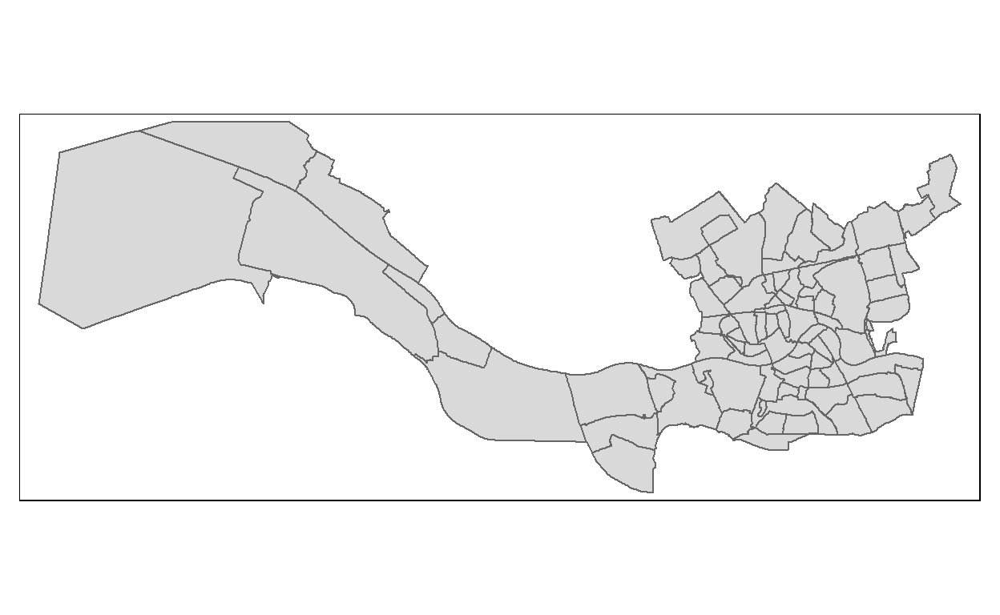
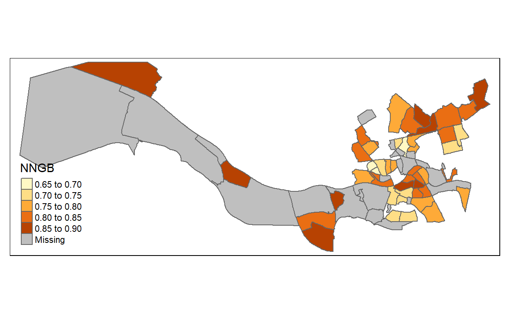

Introduction to Spatial Data & Using R as a GIS
Dit is een bewerking en verkorte versie van de tutorial die Nick Bearman eerder schreef (Introduction to Spatial Data & Using R as a GIS) en die vrij toegankelijk is hier. De data die in deze tutorial worden gebruikt zijn eigen data of open data ook om de techniek goed onder de knie te krijgen. Dank je wel Nick Bearman.
Eindtermen: R Functies & Bibliotheken:
- R gebruiken om CSV data in te lezen: read.csv()
- R gebruiken om ruimtelijke gegevens in te lezen: st_read()
- Weten hoe ruimtelijke gegevens te plotten met behulp van R: qtm() & tm_shape()
- Weten hoe je kleuren en classificaties moet aanpassen: style
- Begrijpen hoe je loops moet gebruiken om meerdere kaarten te maken: for(){}
- Weten hoe je ruimtelijke gegevens opnieuw geprojecteerd krijgt: st_transform()
- In staat zijn om punten te gebruiken in veelhoekanalyse: poly.counts()
- Weten hoe je shapefiles moet opslaan: st_write()
Intro op R & GIS
R Basis
R begon als een statistisch programma en wordt nog steeds door veel gebruikers als een programma gebruikt. We gaan een programma gebruiken dat RStudio heet, dat bovenop R werkt en een goede gebruikersinterface biedt. Ik zal het in de presentatie even hebben over RStudio, en de belangrijkste gebieden van het venster zijn op de achterzijde gemarkeerd.
- Open RStudio (klik op Start en typ RStudio in of dubbelklik op het icoontje op het bureaublad). R kan in eerste instantie als rekenmachine worden gebruikt - voer het volgende in de linkerkant van het venster in - het gedeelte met de titel Console:
[1] 14Maak je voorlopig geen zorgen over de [1] - let wel dat R 14 heeft afgedrukt, want dit is het antwoord op de som die je hebt ingetikt. In deze werkbladen laat ik soms de resultaten zien van wat je hebt ingetypt, zoals hieronder:
[1] 20Merk ook op dat * hier het symbool voor vermenigvuldiging is - in het laatste commando vroeg R om de berekening 5 maal 4 uit te voeren. Andere symbolen zijn - voor aftrekken en / voor delen:
[1] -2
[1] 0.3529412Je kunt de antwoorden van de berekeningen ook toewijzen aan variabelen en gebruiken in berekeningen.
Hier wordt de waarde 300 opgeslagen in de variabele prijs. Het <- symbool betekent dat de waarde rechts in de variabele links in de variabele wordt gezet, deze wordt getypt met een << gevolgd door een -. De variabelen worden getoond in het venster met de naam Environment, rechtsboven in het venster. Variabelen kunnen gebruikt worden in volgende berekeningen. Om bijvoorbeeld een korting van 20% op deze prijs toe te passen, kunt je het volgende invoeren:
#
[1] 240of gebruik tussenvariabelen:
[1] 240R kan ook werken met lijsten met nummers, maar ook met individuele nummers. Lijsten worden gespecificeerd met behulp van de c-functie. Stel dat je een lijst hebt met huizenprijzen in duizenden euro’s. Je zou ze kunnen opslaan in een variabele die house.prices genoemd wordt, zoals hieronder:
[1] 120 150 212 99 199 299 159Merk op dat er geen probleem is met punten in het midden van variabelenamen. U kunt dan functies toepassen op deze lijsten.
[1] 176.8571Als de huizenprijzen in duizenden euro’s zijn, dan zegt dit ons dat de gemiddelde huizenprijs 176.900 EURO bedraagt. Merk op dat het antwoord op jouw scherm meer cijfers kan weergegeven. Dus je kunt iets als 176.8571429 voor gemiddelde waarde hebben.
Het Dataframe
R heeft een manier om gegevens op te slaan in een object dat een dataframe wordt genoemd. Dit lijkt op een interne spreadsheet.
[1] 240Waar alle relevante gegevenselementen samen als een set kolommen worden opgeslagen.
We hebben een CSV-bestand van huizenprijzen en inbraakcijfers, dat we in R kunnen laden. We kunnen gebruik maken van een functie genaamd read.csv die, zoals je misschien wel kunt bedenken, CSV-bestanden leest. Voer de onderstaande coderegel uit, die het CSV-bestand in een variabele met de naam hp.data laadt.
Rotterdam
Als we de gegevens inlezen, is het altijd een goed idee om te controleren of ze goed zijn binnengekomen. Om dit te doen, kunnen we een voorbeeld van de dataset bekijken. Het head-commando toont de eerste 6 rijen van de data.
Hieronder lezen we dan ons databestand in.
# A tibble: 6 x 2
buurtenrotterdam NNGB
<chr> <dbl>
1 Afrikaanderwijk 0.86
2 Agniesebuurt NA
3 Bedrijvenpark Noord_West NA
4 Bedrijventerrein Schieveen NA
5 Bergpolder NA
6 Beverwaard 0.78Je kunt ook op de variabele in het venster Environment klikken, die de gegevens in een nieuw tabblad zal tonen. Je kunt ook zelf invoeren en een tabblad openen met de gegevens:
#Probeer onderstaande, hier niet afgedrukt want dit wordt te lang
View(RotterdamStaat)Je kunt ook elke kolom in de dataset beschrijven met behulp van de summary-functie:
Item Beschrijving
Min. De kleinste waarde in de kolom 1st. Qu. Het eerste kwartiel (de waarde 1/4 van de variabele) Median De mediaan (de waarde 1/2 van de variabele) Mean Het gemiddelde van de kolom 3rd. Qu. Het derde kwartiel (de waarde 3/4 van de variabele) Max. De hoogste waarde in de kolom
buurtenrotterdam NNGB
Length:93 Min. :0.6500
Class :character 1st Qu.:0.7650
Mode :character Median :0.8000
Mean :0.8006
3rd Qu.:0.8400
Max. :0.9000
NA's :30 Voor elke kolom wordt een aantal waarden genoemd:
Op basis van deze getallen kan een indruk worden verkregen van de spreiding van de waarden van elke variabele. Met name kan worden vastgesteld dat de mediaan van de huizenprijs in St. Helens per wijk varieert van 65.000 EURO tot 260.000 EURO en dat de helft van de prijzen tussen 152.500 EURO en 210.000 EURO ligt. Ook kan worden vastgesteld dat, aangezien de mediaan van het gemeten inbraakpercentage nul is, ten minste de helft van de gebieden geen inbraken had in de maand waarin de tellingen werden samengesteld..
We kunnen vierkante haken gebruiken om specifieke delen van het dataframe te bekijken, bijvoorbeeld hp.data[1,] of hp.data[,1]. We kunnen ook kolommen verwijderen en nieuwe kolommen aanmaken met behulp van de onderstaande code. Vergeet niet om het head() commando te gebruiken zoals we eerder deden om naar het dataframe te kijken.
# A tibble: 6 x 3
buurtenrotterdam NNGB counciltax
<chr> <dbl> <lgl>
1 Afrikaanderwijk 0.86 NA
2 Agniesebuurt NA NA
3 Bedrijvenpark Noord_West NA NA
4 Bedrijventerrein Schieveen NA NA
5 Bergpolder NA NA
6 Beverwaard 0.78 NA
# A tibble: 6 x 3
buurtenrotterdam NNGB `Price-thousands`
<chr> <dbl> <lgl>
1 Afrikaanderwijk 0.86 NA
2 Agniesebuurt NA NA
3 Bedrijvenpark Noord_West NA NA
4 Bedrijventerrein Schieveen NA NA
5 Bergpolder NA NA
6 Beverwaard 0.78 NA Geograpfische Informatie
R heeft zich ontwikkeld tot een GIS waar gebruikers aan hebben bijgedragen met pakketten, of ‘libraries’ zoals R ze noemt. We zullen in de tutorial verschillende van dit soort ‘libraries’ gebruiken en zullen ze laden als dat nodig is.
Als u uw computer gebruikt, moet u de R-libraries installeren en ze ook laden. Om dit te doen, start u install.packages (“library_name”).
Om met ruimtelijke gegevens te kunnen werken, moeten we na dat installeren een aantal ‘libraries’ laden>
Om met ruimtelijke gegevens te werken, moeten we enkele libraries laden. Daarmee is R echter alleen maar in staat om geografische data te verwerken. Het laadt nog geen specifieke data sets. Om dit te doen, moeten we enkele gegevens inlezen. Hiervoor gaan we shapefiles gebruiken - een bekend GIS-dataformat. We gaan LSOA(Lower layer Super Output Areas)-data gebruiken voor St. Helens in Merseyside.
R gebruikt werkmappen om informatie op te slaan die relevant is voor het huidige project waaraan je werkt. Ik stel voor dat je een map een bepaalde naam geeft die het R-werk ergens zinvol maakt. Dan moeten we R vertellen waar deze map staat, dus klik op Session > Set Working Directory > Choose Directory. . en selecteer de map die je hebt aangemaakt.
Zoals met de meeste programma’s, zijn er meerdere manieren om dingen te doen. Om bijvoorbeeld de werkmap in te stellen, kunnen we het volgende typen: setwd(“M:/R_werk”). Jouw versie kan een langere titel hebben, afhankelijk van hoe je de map noemt. Merk ook op dat schuine streepjes worden aangegeven met een ‘/’ en niet ’'.
Er is een set van shapefiles voor de St. Helens-wijken op dezelfde locatie als de dataset die je eerder hebt gelezen. Omdat er meerdere bestanden nodig zijn, heb ik deze in één zip-bestand gebundeld. Deze download je naar jouw lokale map en pakt deze vervolgens uit. Dit doe je met de volgende R-functies:
De eerste functie downloadt het zip-bestand daadwerkelijk in uw werkmap. De tweede functie pakt het zip-bestand uit. Nu kunnen we het bestand in R lezen.
Reading layer `wijkindeling' from data source `C:\HARRIE\Tijdelijk\Git\HarriesHoekje\_posts\2019-12-15-r-als-een-gis\wijkindeling.shp' using driver `ESRI Shapefile'
Simple feature collection with 85 features and 14 fields
geometry type: POLYGON
dimension: XY
bbox: xmin: 55500 ymin: 428647.4 xmax: 101032.6 ymax: 447000
epsg (SRID): NA
proj4string: +proj=sterea +lat_0=52.15616055555555 +lon_0=5.38763888888889 +k=0.9999079 +x_0=155000 +y_0=463000 +ellps=bessel +units=m +no_defsDe st_read functie doet dit en slaat ze op als een Simple Features (of sf) object. Je kunt de qtm-functie gebruiken om de polygonen (d.w.z. de kaart van de LSOA) te tekenen.

We kunnen ook het head()-commando gebruiken om de eerste zes rijen te tonen, precies hetzelfde als bij een data frame.
Simple feature collection with 6 features and 14 fields
geometry type: POLYGON
dimension: XY
bbox: xmin: 87699.71 ymin: 433848.1 xmax: 96594.48 ymax: 440401.8
epsg (SRID): NA
proj4string: +proj=sterea +lat_0=52.15616055555555 +lon_0=5.38763888888889 +k=0.9999079 +x_0=155000 +y_0=463000 +ellps=bessel +units=m +no_defs
GROEP CODE GEMEENTE GEBIED BUURT SUBBUURT SBTDEEL BLOK TEKST
1 TIR 15 599 10 79 -1 -1 -1 1079
2 TIR 15 599 3 27 -1 -1 -1 0327
3 TIR 15 599 19 26 -1 -1 -1 1926
4 TIR 15 599 3 22 -1 -1 -1 0322
5 TIR 15 599 8 42 -1 -1 -1 0842
6 TIR 15 599 10 82 -1 -1 -1 1082
GEBDNAAM BUURTNAAM wijknr Shape_Leng
1 Feijenoord Kop van Zuid - Entrepot 79 4134.193
2 Delfshaven Oud Mathenesse/Witte Dorp 3004 4828.106
3 Nieuw Mathenesse Nieuw Mathenesse 0 6494.563
4 Delfshaven Tussendijken 22 2853.695
5 Kralingen-Crooswijk Kralingen Oost/Kralingse Bos 3005 12400.652
6 Feijenoord Hillesluis 82 4786.269
Shape_Area geometry
1 671847.0 POLYGON ((93530.4 436049.7,...
2 880203.0 POLYGON ((89592.66 437446.3...
3 2071912.9 POLYGON ((87705.53 436406.7...
4 399761.8 POLYGON ((89484.61 436419.5...
5 6521950.1 POLYGON ((95980.45 440392, ...
6 902617.3 POLYGON ((94062.15 434700.2...Voor degene die met GIS werkt: Dit is hetzelfde als de attribuutentententabel in programma’s als ArcGIS, QGIS of MapInfo. Als u het shapefile in QGIS of ArcGIS wilt openen om vast te stellen hoe het er zo’n beetje uit ziet, kunt u dat doen.
Je kunt zien dat er veel informatie beschikbaar is, inclusief de geometrie. Voor ons is het ID-veld belangrijk, en zien dat dit overeenkomt met het ID-veld in het hp.data bestand. We kunnen dit gebruiken om de twee datasets samen te voegen om de inbraakgegevens op de kaart te tonen.
Het idee is dat er in elke dataset een veld is dat we kunnen gebruiken om de twee samen te voegen; in dit geval hebben we het ID-veld in sthelens en het ID-veld in hp.data.
Gebruik de head-functie om te controleren of de gegevens correct zijn samengevoegd.
Simple feature collection with 6 features and 16 fields
geometry type: POLYGON
dimension: XY
bbox: xmin: 88174.91 ymin: 432495.7 xmax: 99128.64 ymax: 442409.5
epsg (SRID): NA
proj4string: +proj=sterea +lat_0=52.15616055555555 +lon_0=5.38763888888889 +k=0.9999079 +x_0=155000 +y_0=463000 +ellps=bessel +units=m +no_defs
BUURTNAAM GROEP CODE GEMEENTE GEBIED BUURT
1 Afrikaanderwijk TIR 15 599 10 86
2 Agniesebuurt TIR 15 599 5 15
3 Bedrijventerrein Schieveen TIR 15 599 26 50
4 Bergpolder TIR 15 599 5 31
5 Beverwaard TIR 15 599 12 90
6 Bloemhof TIR 15 599 10 81
SUBBUURT SBTDEEL BLOK TEKST GEBDNAAM wijknr
1 -1 -1 -1 1086 Feijenoord 86
2 -1 -1 -1 0515 Noord 15
3 -1 -1 -1 2650 Bedrijventerrein Schieveen 0
4 -1 -1 -1 0531 Noord 31
5 -1 -1 -1 1290 IJsselmonde 90
6 -1 -1 -1 1081 Feijenoord 81
Shape_Leng Shape_Area NNGB Price-thousands
1 3461.527 621148.9 0.86 NA
2 2809.173 384570.5 NA NA
3 5036.165 1518931.1 NA NA
4 3253.672 454195.3 NA NA
5 6592.857 1514886.2 0.78 NA
6 3613.866 788457.4 0.81 NA
geometry
1 POLYGON ((93595.07 434773.5...
2 POLYGON ((91881.82 438449.9...
3 POLYGON ((88174.91 441742.2...
4 POLYGON ((91216.07 439018.2...
5 POLYGON ((97775.88 434798.3...
6 POLYGON ((93506.9 434355.2,...Nu we de gegevens hebben samengevoegd, kunnen we een kaart maken van deze huizen-prijzen.

Dit is een zeer snelle manier om een kaart met R te maken. Om de kaart te gebruiken, klikt u op de Export-knop en kiest u vervolgens voor Copy naar Clipboard. . . . Kies vervolgens Copy Plot. Als je ook Word hebt, kun je de kaart in je document plakken. Je kunt de kaart ook opslaan als Afbeelding of PDF.
Een Kaart maken Census Data
Werken met R vereist vaak meerdere coderegels code om een output te krijgen. In plaats van de code in de Console in te typen, kunnen we in plaats daarvan een script gebruiken. Daar kunnen we altijd naar teruggaan en de code zeer eenvoudig te bewerken, om fouten te corrigeren!
Maak een nieuw script aan (File > New File > R-script) en voer de code daar in. Vervolgens kunt je de regels die je wilt uitvoeren selecteren door ze te markeren en vervolgens op Ctrl+Enter te drukken, of door de Run knop bovenaan te gebruiken.
Nu gaan we hetzelfde principe gebruiken als voorheen om een kaart te maken van enkele gegevens uit 2018. We moeten de gegevens eerst downloaden.
- Ga naar https://www.cbs.nl/nl-nl/dossier/nederland-regionaal/wijk-en-buurtstatistieken/kerncijfers-wijken-en-buurten-2004-2019.
- Open vervolgens https://www.cbs.nl/nl-nl/maatwerk/2018/30/kerncijfers-wijken-en-buurten-2018.
- sla het bestand kwb-2018.xls op in map Buurtexcel.
Omdat de bestanden te zwaar zijn, vind je de informatie hierover niet hier. In het pdf bestand kun je hier wel over lezen (zie in deze map WerkdocumentNEDoriginal.pdf).
Referenties
Nick Bearman. Introduction to Spatial Data & Using R as a GIS. https://github.com/nickbearman/intro-r-spatial-analysis/blob/master/workbook.pdf
Lovelace, R., Nowosad, J. and Muenchow, J. Geocomputation with R. https://geocompr.github.io/
Deze ‘practical’ is geschreven met R 3.5.1 (2018-07-02) en RStudio 1.1.463 door Dr. Nick Bearman (nick@ geospatialtrainingsolutions.co.uk).
Het werk is gelicenseerd onder Creative Commons Attribution-ShareAlike 4.0 International License. Om een kopie van deze licentie te zien, ga dan naar http://creativecommons.org/licenses/by-sa/4.0/deed.en. De laatste PDF-versie kun je hier https://github.com/nickbearman/intro-r-spatial-analysis vinden. Deze versie is op 18 May 2019 gemaakt.